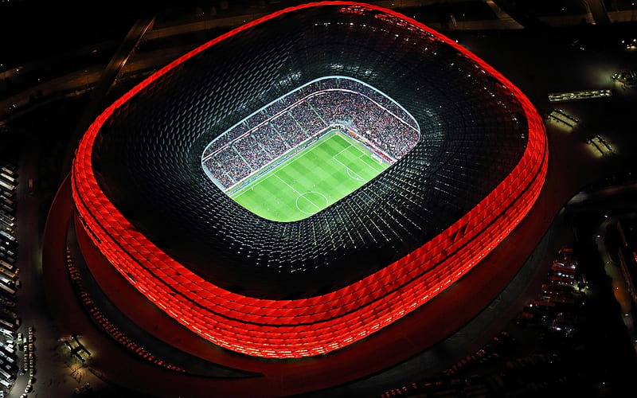

Best Futbol Staduims

Estadio Santiago Bernabeu - Spain

Tottenham Hotspur Stadium - England

Wembely Stadium - England

Signal Iduna Park - Germany
- 
Allianz Arena - Germany

Estadio Azteca - Mexico

Anfield - London

Old Trafford - England

San Siro - Italy